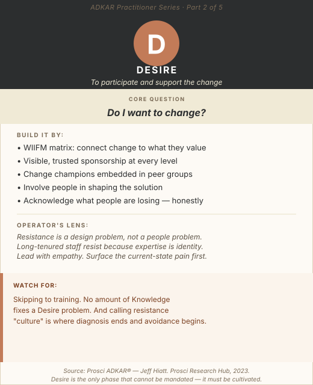

When a change program hits resistance, the instinct is to treat it as a people problem. The employees are being difficult. The managers aren't on board. The culture is resistant to change. The workforce just needs to understand that this is happening and adapt.
That framing is wrong, and it is expensive to be wrong about it.
Resistance is a signal, not a character flaw. It tells you something specific about where the program's design has failed to address what individuals actually care about. When people resist, they are not being obstinate. They are responding rationally to a situation in which the change has not been made personally compelling to them, or in which their concerns have not been genuinely addressed.
The Desire phase of ADKAR is where the practitioner's job shifts from communicating facts to engineering conditions, creating an environment in which individuals make the personal decision to support and participate in the change. You cannot mandate that decision. You cannot train it into someone. But you can absolutely design for it.
Foundation
What Desire Actually Is
Desire is the most human element of the ADKAR model, and the hardest to influence directly because it lives inside each individual. It is the personal, internal commitment to support the change, as distinct from surface-level compliance.
When people genuinely want to change, they invest discretionary effort. They troubleshoot the new process instead of reverting to the old one. They become informal advocates rather than passive resistors. They ask "how do we make this work?" instead of "how do we get back to the way things were?"
Surface compliance looks like adoption. But it is fragile: the first friction event or leadership signal of wavering commitment, and it evaporates. Genuine Desire is durable. It is also the only way an organization achieves the sustained behavioral change that process excellence programs are designed to deliver.
Desire emerges from three conditions:
Pain
The individual recognizes the current state as inadequate in ways that matter to them personally
Promise
The future state is compelling to them specifically, not in aggregate, but in their role and daily work
Trust
They believe the leadership driving the change will deliver on what they're promising
When any of these three conditions is absent, Desire does not develop, regardless of how many training programs or communication campaigns you run.

ADKAR Practitioner Series · Part 2: Desire. Resistance is a design problem.
Diagnosis
How to Confirm a Desire Barrier Point
An Awareness problem and a Desire problem can look superficially similar. The diagnostic question that separates them: does the person understand the change but still not want it?
Desire Gap Signals
- People can explain what's changing and why, but they're not doing it
- Passive resistance: compliance in meetings, reversion to old behaviors in practice
- "It won't work here" or "we tried something like this before" narratives dominating team conversations
- Visible informal leaders are publicly or privately skeptical
- Training attendance is strong; adoption metrics are weak
- Managers are not visibly sponsoring the change with their teams, they're managing it like an administrative requirement
A useful diagnostic conversation: ask a team member directly, "What do you see as the benefit of this change for your specific work?" If they genuinely can't answer, or give you an answer that reflects organizational talking points with no personal conviction, you have a Desire gap.
Program Design
Eight Blueprints for Building Desire
The WIIFM Matrix — Design This Before Anything Else
"What's in it for me?" is not a selfish question. It is the legitimate question every rational person asks before investing effort in something new. The failure to answer it is a design failure, not an attitude problem.
Before designing any Desire-building intervention, build a WIIFM matrix: for each major affected population, document what the change means for their specific role. What daily frictions does it eliminate? What capabilities does it give them? What risks does it remove? What does it enable for their team or career that the current state cannot?
Then document the other side: what do they stand to lose? Familiar routines. Hard-won process expertise. A certain kind of autonomy. Relationships with systems or tools they've mastered. Acknowledging the losses honestly is as important as articulating the gains, people who feel their losses are being minimized resist more, not less. The WIIFM matrix is the brief for all Desire-building content and conversations.
Engineering Constructive Dissatisfaction with the Status Quo
Even when things are "mostly fine," Desire can be built by making the limitations of the current state visible and personal, not by attacking it, but by surfacing the friction that people already feel but haven't quantified.
The technique: use data and story together. Data alone is abstract (a 12% error rate means little). Story alone is anecdotal (one difficult case doesn't represent a systemic problem). Together, they are compelling: "Our rework rate costs this team approximately 4 hours per person per week, that's time you could spend on the work that actually requires your expertise, not on fixing errors that a better-designed process wouldn't produce."
This approach is particularly powerful in operational environments where front-line employees already feel the friction of the current state. A leader who says "we see it too, and here's the data to show what it's costing us" validates what they already know, and suddenly the change is solving their problem, not imposing a new one on them.
The Resistance Mapping Workshop
Most change programs address resistance reactively: when it surfaces, they scramble to respond. A better approach: anticipate it systematically before it appears.
Resistance mapping is a facilitated workshop with senior leaders and people managers, typically run 4–6 weeks before a major implementation. The output is a resistance map: a segmented view of the affected population, with a hypothesis about the likely source and intensity of resistance in each segment. Resistance sources vary: some segments will resist because of fear, some because of loss, some because of distrust, and some because of genuine concern about the design (they see flaws the project team hasn't seen). Each source requires a different response.
The workshop output gives the change team a proactive playbook: targeted conversations, pilot invitations, listening sessions, and targeted communications; all segmented and timed before resistance has a chance to consolidate into organized opposition.
Change Champion Networks
Change champions are internal advocates: peers who model the new behavior, answer questions informally, gather real-time feedback, and signal to their colleagues that it's safe to be on board.
What makes a good champion is counterintuitive. The best champions are not necessarily the highest performers or the most senior people. They are individuals who are well-networked, trusted by their peers, and credible, which often means informal leaders, long-tenured employees with broad relationships, or people who are known for calling things as they see them. A skeptic-turned-champion carries more Desire-building power than an eager early adopter.
Champion network design:
- Selection: Identify by function and geography, prioritizing peer influence over hierarchical authority
- Equipping: Provide briefings on the full change picture (not the sanitized version), honest Q&A sessions, and clear boundaries on what they can and cannot speak to
- Activation: Specific tasks: attending team meetings in their function to answer questions, reporting back resistance themes to the project team, modeling the new behavior visibly
- Maintenance: Regular (biweekly) champion forums to share what they're hearing and recalibrate messaging
Champion networks are most effective when champions feel genuinely informed and empowered, not when they feel like they're being used to manage resistance on leadership's behalf. The distinction matters, and employees can tell.
Personal Impact Dialogues
The most effective Desire-building conversations happen in small groups or one-on-one, not in all-hands sessions. Personal impact dialogues are structured conversations, led by people managers, that walk individuals through how the change specifically affects their role, workflow, career path, and day-to-day experience.
A well-designed dialogue opens with acknowledgment ("I know this is a significant change for our team"), covers what's changing specifically for their role, addresses what they stand to lose honestly, connects the future state to what they've expressed they want from their work, and ends with space for their questions and a genuine commitment to get answers to what can't be answered in the moment.
This is not a one-time event. In the 30 days leading up to a go-live, high-quality personal dialogues, even 15 minutes each, are among the most efficient Desire investments available. They signal that leadership sees the change as a human event, not just a project milestone.
Visible Loss Acknowledgment
The most consistently underutilized Desire-building tool is the honest acknowledgment of what people are giving up.
Most change communication is relentlessly future-focused: the new process will be better, faster, more efficient, more consistent. What it doesn't say is: "And yes, the expertise you've spent years building in the current system is being retired. That's real, and it matters."
When change leaders acknowledge losses explicitly, "I know this takes away the autonomy you've had in how you sequence this work, and we understand that's meaningful", it builds a level of trust that no amount of "here's what you'll gain" messaging can match. People don't need to be told their losses are fine. They need to be told that leadership sees them. This is particularly important for long-tenured employees in operational environments, where mastery of the current process is part of professional identity.
The Pilot Strategy as Desire Tool
A visible, successful pilot does more to build Desire than any communication campaign because it provides proof, not promises. When people see their peers succeeding with the new way, the "it won't work here" narrative loses its grip.
Pilot design for Desire impact: choose the population strategically. Not the enthusiastic early adopters, those are easy. Choose a representative, credible group that includes some skeptics. Success with a skeptical population sends a stronger signal. Make it visible. Share what went wrong, not just what went right. Pilots that are reported as uniformly successful generate skepticism. Pilots that share "here's what was hard and how we addressed it" build trust and Desire simultaneously.
Recognition Aligned to Participation, Not Just Outcomes
Recognition programs that celebrate adoption, not just results, signal that the organization values the effort of change, not only the end-state performance. This is an underutilized lever because most recognition systems are designed for steady-state performance, not for the messy, uncertain middle of a change program.
Specific recognition ideas: publicly acknowledging teams who have completed early adoption milestones (not just the teams performing best on outcome metrics yet); sharing stories from champions and early adopters in leadership communications; creating visible adoption boards or dashboards that celebrate progress; manager recognition from senior sponsors, delivered personally, for teams navigating the change well.
The signal sent by recognition during the change process is: this matters, your effort is seen, and the organization is committed enough to pay attention. That signal is a Desire accelerant.
The Operator's Lens
Long tenure creates identity risk. In operational environments, people often define professional identity through mastery of current processes. A process change doesn't just alter workflows, it can feel like it's retiring the expertise that makes someone valuable. Desire strategy in operational settings must explicitly address identity continuity: what skills and knowledge transfer to the new state? Where does their expertise create an advantage in the new environment? The answers to these questions, communicated directly, convert some of the most resistant employees into the most effective champions.
Peer influence dominates. In operational teams, the social proof of seeing respected peers adopt the change is more powerful than any executive communication. One influential informal leader who is visibly on board can move more Desire in a unit than a month of manager cascades. Identify these individuals early. Invest in bringing them into the process with genuine information and influence, not as message carriers, but as real participants in shaping the approach.
Fear of consequence is a legitimate motivator, use it honestly. In Lean/Six Sigma and operational transformation work, the consequences of the status quo are often measurable and real: safety incidents, customer defections, regulatory risk, cost overruns. Leaders who clearly articulate "here is what happens to this operation, and to the people in it, if we don't change" are using a legitimate Desire lever. The key is honesty and specificity. Vague urgency ("we need to stay competitive") is less effective than concrete stakes ("at our current error rate, we lose this contract in 18 months").
Common Traps
Mistakes to Avoid
Prescribing training for a Desire problem.
This is the single most costly ADKAR mismatch. Someone who lacks Desire does not lack Knowledge, and forcing training at a person who doesn't want to change reinforces the feeling of being managed, not led.
Calling resistance "culture."
Culture is a pattern of behavior, not an immovable force. When practitioners label resistance as "just the culture here," they have stopped diagnosing and started avoiding. Resistance always has a source, and that source is addressable.
Using authority when you need influence.
"This is happening, so get on board" is a last resort, not a first response. Authority produces compliance. Genuine Desire-building produces commitment. In complex operational changes that require sustained behavior change over years, compliance is rarely enough.
Skipping the losses.
Change programs that present only the gains, and never acknowledge what people are giving up, are not credible. Credibility is the foundation of Desire. Earn it by being honest about the full picture.
The good news: resistance is not a fixed condition. It is a signal about what the program hasn't yet addressed. Find the source, design the response, and Desire becomes the accelerant that makes every subsequent investment in Knowledge and Ability pay off.
Sources: Prosci ADKAR® Research Hub. Prosci Desire and Resistance Management guidance. Sources of Insight: "Create Desire to Drive Change." Umbrex: Prosci ADKAR Model frameworks.